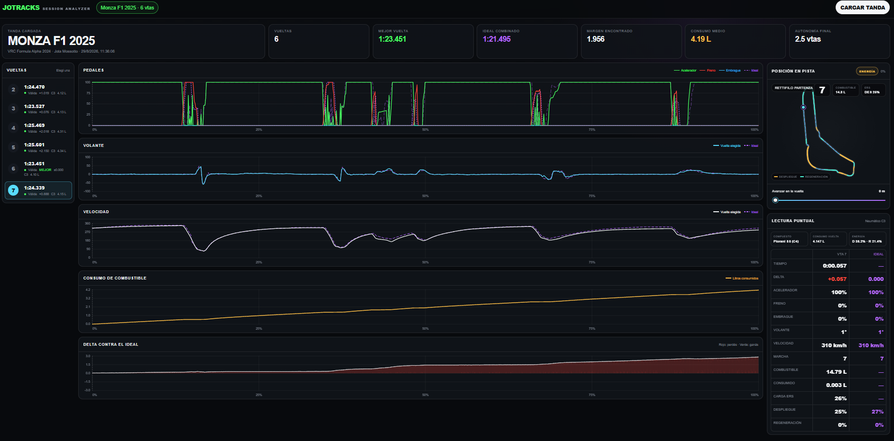

INSTALÁ LA APPCopiala dentro de Assetto Corsa y abrila desde la barra de CSP.
RACING DATA LAB
HERRAMIENTA GRATUITA PARA ASSETTO CORSA
CONVERTÍ CADA VUELTA
EN INFORMACIÓN.
Compará vueltas completas, encontrá dónde frenaste de más y recorré cada metro del circuito junto a tu ideal combinado.
PedalesVolanteMarchasCombustibleNeumáticosDesgasteERS/KERS

IDEALSIEMPRE VIOLETA
COMPLETÁ TU TANDACada vuelta se guarda automáticamente en un archivo de sesión.
CARGÁ Y COMPARÁArrastrá el archivo al analizador. Todo se procesa localmente.
JOTRACKS
SESSION ANALYZER
PROCESAMIENTO LOCAL · TUS DATOS NO SE SUBEN
PANTALLA COMPLETA ↗